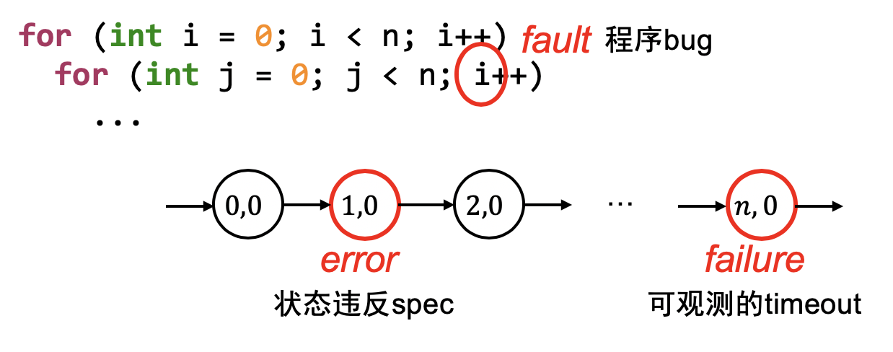
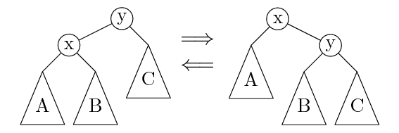

调试理论与实践
背景回顾：在快节奏的《操作系统》课中，插入一些 (重要得要命但与操作系统不完全相关的) 休闲内容。
本讲内容：调试理论：Fault, Error 和 Failure；GDB 使用技巧。
调试理论
机器永远是对的
不管是 crash 了，Wrong Answer 了，还是虚拟机神秘重启，都是自己背锅
未测代码永远是错的
你以为最不可能出 bug 的地方，往往 bug 就在那躺着
调试困难的根本原因
bug 的触发经历了漫长的过程
- 需求 → 设计 → 代码 (状态机) → Fault (bug) → Error (程序状态错) → Failure
- 我们只能观测到 failure (可观测的结果错)
- 我们可以检查状态的正确性 (但非常费时)
- 无法预知 bug 在哪里 (每一行 “看起来” 都挺对的)

调试理论和实际调试
调试理论：如果我们能判定任意程序状态的正确性，那么给定一个 failure，我们可以通过二分查找定位到第一个 error 的状态，此时的代码就是 fault (bug)。
为什么我们喜欢 “单步调试”？
- 从一个假定正确的状态出发
- 每个语句的行为有限，容易判定是否是 error
为什么调试理论看起来很没用？
- 因为判定程序状态的正确性非常困难
实际中的调试：观察状态机执行 (trace) 的某个侧面
- 缩小错误状态 (error) 可能产生的位置
- 作出适当的假设
- 再进行细粒度的定位和诊断
最重要的两个工具
- printf → 自定义 log 的 trace，用于检测状态是否正确
- 灵活可控、能快速定位问题大概位置、适用于大型软件
- 无法精确定位、大量的 logs 管理起来比较麻烦
- gdb → 指令/语句级 trace
- 精确、指令级定位、任意查看程序内部状态
- 耗费大量时间
调试 “任何问题”
计算机世界：一切皆可调试
程序 = 计算机系统 = 状态机
- 机器永远是对的
- UNIX 世界里你做任何事情都是在编程
- 因此配置错、make 错等，都是程序或输入/配置有 bug
- (输入/配置可以看成是程序的一部分)
所有问题都可以用调试理论解决
- 你写了一个程序，现在这个程序出 bug 了 (例如 Segmentation Fault)，你是怎样排查这个问题的？
- curl: command not found
'sys/cdefs.h': No such file or directory- make: run: No such file or directory
使用调试理论
Debug (fault localization) 的基本理论回顾：
- Fault (程序/输入/配置错) → Error → Failure (可观测)
- 绝大部分工具的 Failure 都有 “原因报告”
- 因此能帮助你快速定位 fault
man perror：标准库有打印 error message 的函数
如果问题不能帮你定位到 fault/error？
- 出错原因报告不准确或不够详细
- 程序执行的过程不够详细
- 既然我们有需求，那别人肯定也会有这个需求
- 一定有信息能帮助我们！
正确的方法：理解程序 (状态机) 的执行过程
ssh：使用-v选项检查日志gcc：使用-v选项打印各种过程make：使用-n选项查看完整命令make -nB | grep -ve '^\(echo\|mkdir\)'可以查看完整编译 nemu 的编译过程
各个工具普遍提供调试功能，帮助用户/开发者了解程序的行为
例子：找不到 sys/cdefs.h
'sys/cdefs.h': No such file or directory，找不到文件
#include= 复制粘贴，自然会经过路径解析- (折腾20分钟) 明明
/usr/include/x86_64-linux-gnu/sys/cdefs.h是存在的 (man 1 locate) → 极度挫败，体验极差
推理：#include <> 一定有一些搜索路径
- 为什么两个编译选项，一个通过，一个不通过？
gcc -m32 -vv.s.gcc -v
这是标准的解决问题办法：自己动手排查
- 在面对复杂/小众问题时比 STFW/ChatGPT 有效
使用 GDB 调试程序
GDB: 入门
GDB: 最常用的命令在 gdb cheat sheet
- 打印贴在电脑前，调试时候看一遍，很快就大致记住了
想要更好的体验？
- GDB 本身也是一个编程语言
- 它甚至支持 Python
- 可以执行一些初始化代码 (-x)
- 可以反向执行（非确定性局限在局部）
- 库函数也是代码
- directory 命令增加源码路径
- GDB 有许多前端
- cgdb, pwndbg, vscode, ...
- RTFM - M 比 ChatGPT 好用在于它不需要 prompt 且全面
🌶️ Futex: Fast Userspace muTexes
调试 POSIX 线程库中的互斥锁 (pthread_mutex)
- 观察线程库中的 lock/unlock 行为（GDB 调试，设置只有当前线程执行）
- Mutex 没有争抢的情况（当前线程执行）
- 没有 syscall
- Mutex 有争抢的情况（当前线程未释放锁时，切换到另外一个竞争线程执行）
- syscall 0xca（futex 系统调用）
调试理论：应用
需求 → 设计 → 代码 → Fault → Error → Failure
“Technical Debt”
每当你写出不好维护的代码，你都在给你未来的调试/需求变更挖坑。
编程基本准则：回顾
Programs are meant to be read by humans (AIs) and only incidentally for computers to execute. — D. E. Knuth
(程序首先是拿给人读的，其次才是被机器执行。)
好的程序
- 不言自明：能知道是做什么的 (specification)
-
因此代码风格很重要
-
不言自证：能确认代码和 specification 一致
-
因此代码中的逻辑流很重要
-
人类新纪元的评判标准
- AI 是否能正确理解/维护你的代码
调试理论的最重要应用
写好读、易验证的代码
在代码中添加更多的断言 (assertions)
断言的意义：把代码中隐藏的 specification 写出来
- Fault → Error (靠测试)
- Error → Failure (靠断言)
- Error 暴露的越晚，越难调试
- 追溯导致 assert failure 的变量值 (slice) 通常可以快速定位到 bug
示例：维护父亲节点的平衡树

// 结构约束
assert(u->parent == u ||
u->parent->left == u ||
u->parent->right == u);
assert(!u->left || u->left->parent == u);
assert(!u->right || u->right->parent == u);
// 数值约束
assert(!u->left || u->left->val < u->val);
assert(!u->right || u->right->val > u->val);
更多的断言
每一次指针访问时，都增加一个断言
assert(obj->low <= ptr && ptr < obj->high);
神奇的编译选项：-fsanitize=address
- Address Sanitizer(asan)： “动态程序分析”，提供了内存访问 (例如数组越界) 的额外检查。